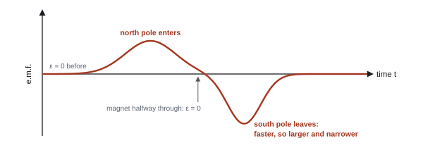
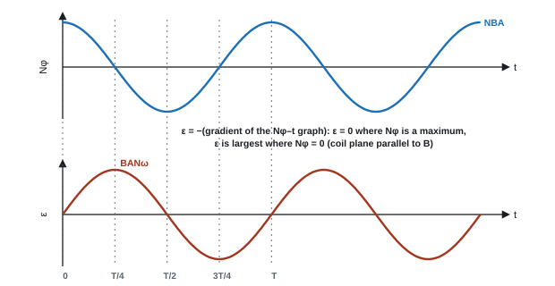

Magnetic Fields & Induction
A magnetic field pushes sideways on moving charges, and that one fact explains electric motors, the curved tracks in particle detectors and the beam steering in old TV tubes. Run it backwards and you get electromagnetic induction: move a magnet near a coil and a voltage appears from nowhere. That is how almost all of the world's electricity is generated. Let's build both ideas up from the force on a single wire.
Spec105Magnetic flux density, flux and flux linkage
Understand and use magnetic flux density B, magnetic flux φ and flux linkage Nφ.
Magnetic flux density B
- B measures the strength of a magnetic field: the force per unit current per unit length on a wire at right angles to the field (from F = BIl).
- Unit: the tesla (T). 1 T = 1 N A⁻¹ m⁻¹. Earth's field is about 50 µT; a strong lab magnet about 0.1–1 T.
- B can be thought of as the density of field lines: the flux per unit area.
Magnetic flux φ
Magnetic flux through an area
- φ = flux (weber, Wb; 1 Wb = 1 T m²), A = area (m²), θ = angle between B and the normal to the area.
- Plane of the coil perpendicular to B: maximum flux BA. Plane of the coil parallel to B: zero flux.
Flux linkage Nφ
Flux linkage
- N = number of turns. Unit: Wb turns (Wb is accepted).
- Induced e.m.f. depends on how fast the flux linkage changes (110).
flux linkage of a tilted coil
A 200-turn coil of radius 1.5 cm is in a field of 0.060 T. The field makes 30° with the normal to the coil.
A = πr² = π × 0.015² = 7.07 × 10⁻⁴ m²
φ = BA cos θ = 0.060 × 7.07 × 10⁻⁴ × cos 30° = 3.67 × 10⁻⁵ Wb
Nφ = 200 × 3.67 × 10⁻⁵ = 7.3 × 10⁻³ Wb turns
- "Calculates area of coil", "applies flux = flux density × area", "flux linkage = Nφ". Units: "Wb, weber turns or T m²".
- Component of a field through a tilted surface: e.g. "Bvertical = 55 µT × sin 65°".
Often asked as: φ or Nφ for a coil; unit of flux linkage; MCQ on flux linkage after turning a coil through 180° (it becomes −Nφ).
Using the diameter in πr².
Multiplying by N twice (once in φ, again for flux linkage).
Taking θ as the angle to the plane of the coil but still using cos. Check whether θ is measured to the normal or to the surface.
The Earth's field has horizontal and vertical components. Over the equator it is horizontal, so a level aircraft wing cuts no flux; elsewhere use the vertical component for a horizontal wing (WPH14 Oct 2025).
Spec106Force on a charge moving in a magnetic field
Use F = Bqv sin θ and Fleming's left-hand rule for charged particles moving in a magnetic field.
Force on a moving charge
Take a wire of cross-sectional area \(A\) with \(n\) charge carriers per unit volume, each of charge \(q\), drifting at speed \(v\). From Unit 2, the current is:
\[ I = nqvA \]With the wire at right angles to the field, the force on a length \(l\) is:
\[ F = BIl = B(nqvA)\,l \]The number of charge carriers in that length of wire is (number per unit volume) × (volume):
\[ N = nAl \]Divide the total force by the number of carriers to get the force on each one:
\[ \frac{F}{N} = \frac{B\,nqvA\,l}{nAl} \quad\Rightarrow\quad \boxed{F = Bqv} \]If the charge moves at an angle \(\theta\) to the field, only the velocity component \(v\sin\theta\) across the field counts, giving \(F = Bqv\sin\theta\).
- F = force (N), B = flux density (T), q = charge (C), v = speed (m s⁻¹), θ = angle between v and B.
- Maximum force (F = Bqv) when v is perpendicular to B; zero force when the particle moves parallel to B.
Direction: Fleming's left-hand rule
- First finger = Field (N to S), seCond finger = Current, thuMb = Motion (force). The three are at right angles.
- The "current" finger points along the conventional current: the direction a positive charge moves. For an electron, point the second finger opposite to its velocity.
- Notation: × = field into the page, • = field out of the page.
Consequences
- The force is always perpendicular to the velocity, so it does no work: the speed and kinetic energy stay constant. Only the direction changes.
- In a uniform field at right angles, the force is a constant-size centripetal force, so the particle moves in a circle (see 115).
force on a proton
A proton moves at 3.0 × 10⁶ m s⁻¹ at right angles to a 0.25 T field.
F = Bqv = 0.25 × 1.60 × 10⁻¹⁹ × 3.0 × 10⁶ = 1.2 × 10⁻¹³ N
At 40° to the field: F = 1.2 × 10⁻¹³ × sin 40° = 7.7 × 10⁻¹⁴ N
An electron moves at \(3.0\times10^{7}\ \text{m s}^{-1}\) at right angles to a uniform magnetic field of flux density 4.0 mT. Calculate the magnetic force on it and its acceleration.
Show solution
\(F = Bqv = 4.0\times10^{-3} \times 1.60\times10^{-19} \times 3.0\times10^{7} = 1.9\times10^{-14}\ \text{N}\)
\(a = F/m = 1.92\times10^{-14} / 9.11\times10^{-31} = 2.1\times10^{16}\ \text{m s}^{-2}\), directed towards the centre of its circular path. Tiny force, enormous acceleration, because the electron's mass is so small.
- "Use of F = Bqv sin θ" (sin θ = 1 when perpendicular).
- Direction marks: "applying FLHR, field into the page", often dependent on a correct direction of motion.
- Velocity selector: "magnetic force = electric force", BQv = EQ, so v = E/B.
Often asked as: calculate F, v or B; field direction from the way a track curves; velocity selector and e/m questions.
Forgetting to reverse the rule for negative particles.
Using charge = 1, or B in mT without converting.
Mixing up F = Bqv (a moving charge) with F = BIl (a wire).
- Velocity selector: crossed E and B fields; only particles with v = E/B (= V/Bd for plates) pass undeflected. Example: E = 2.0 × 10⁴ V m⁻¹ and B = 5.0 mT select v = 4.0 × 10⁶ m s⁻¹ (WPH14 Jan 2023, Oct 2022).
- Measuring e/m: combine the selected speed with the radius in the magnetic field alone: e/m = v/Br (WPH14 Jan 2023, Oct 2023).
Spec107Force on a current-carrying conductor
Use F = BIl sin θ and Fleming's left-hand rule for a current-carrying conductor in a magnetic field.
Force on a current-carrying conductor
- F = force (N), B = flux density (T), I = current (A), l = length of wire in the field (m), θ = angle between the wire and B.
- Maximum when the wire is perpendicular to the field; zero when parallel.
- Link to 106: a current is moving charge. Charge Q passing along length l in time t gives I = Q/t and v = l/t, so BIl = B(Q/t)(vt) = BQv.
- Direction by Fleming's left-hand rule, with the second finger along the conventional current.
wire on a balance
A 5.0 cm length of wire carrying 3.5 A sits at right angles to a 0.12 T field.
F = BIl = 0.12 × 3.5 × 0.050 = 0.021 N
On a top-pan balance under the magnet this shows as a change in reading of 0.021 ÷ 9.81 = 2.1 × 10⁻³ kg = 2.1 g (Newton's third law: the wire pushes back on the magnet).
cable in the Earth's field
A 30 m cable carries 200 A at 60° to the Earth's field of 50 µT.
F = BIl sin θ = 50 × 10⁻⁶ × 200 × 30 × sin 60° = 0.26 N
A straight wire carries a current of 2.5 A. A 6.0 cm length of it lies in a uniform magnetic field of flux density 0.15 T, at an angle of 40° to the field. Calculate the force on the wire. What is the largest force this wire could feel in this field, and how would you arrange it?
Show solution
\(F = BIl\sin\theta = 0.15 \times 2.5 \times 0.060 \times \sin 40^\circ = 0.0225 \times 0.643 = 1.4\times10^{-2}\ \text{N}\)
The largest force is when \(\sin\theta = 1\), with the wire at 90° to the field: \(F = 0.15 \times 2.5 \times 0.060 = 2.3\times10^{-2}\ \text{N}\). The direction is perpendicular to both the wire and the field, from Fleming's left-hand rule.
- "Component of B calculated using cos 20° or sin 70°": use the component perpendicular to the wire.
- Coil in a field: "by FLHR, force up on one side, down on the other", forming a couple.
- Balance questions: "magnetic force = weight", or the balance reading change = F/g.
Often asked as: balance or rod experiments to find B; a cable in the Earth's field; forces on the sides of a coil.
Mixing up sin and cos when finding the field component.
Explaining a motor-effect question with induction and Lenz's law.
Giving the force on one side of a coil only, when both are asked for.
- Couple on a coil: each side of an N-turn coil feels NBIl; the moment = force × perpendicular distance between the sides (WPH14 Oct 2024).
- Rod on rails: F = BIl accelerates the rod; with suvat, B = ma/Il (WPH14 Oct 2025).
Spec108E.m.f. from relative motion of a coil and a magnet
Understand the factors that affect the e.m.f. induced in a coil when a coil and a permanent magnet move relative to each other.
What happens
- Move a magnet into a coil: the flux linking the coil changes, so an e.m.f. is induced and, if the circuit is complete, a current flows.
- Hold the magnet still inside the coil: no change in flux linkage, no e.m.f.
- Pull it out: e.m.f. in the opposite direction. Reversing the pole also reverses it.
- It is the relative motion that matters: moving the coil over a still magnet works too.
- Equivalent picture: the wires of the coil cut lines of flux.
Factors that increase the e.m.f.
All of these increase the rate of change of flux linkage:
- faster relative motion
- stronger magnet (larger B)
- more turns on the coil (larger N)
- larger coil area, or a soft-iron core inside the coil
A magnet falling through a coil

A straight wire moving through a field
A wire of length l moving at speed v at right angles to B sweeps out area lv each second, so the flux cut per second is Blv:
E.m.f. across a moving conductor
A rotating coil (a generator)
As a coil rotates steadily in a uniform field, its flux linkage rises and falls sinusoidally, so it produces an alternating e.m.f. Faster rotation gives a larger peak e.m.f. and a higher frequency (see the graphs in 110).
A rod of length \(l\) moves at speed \(v\) at right angles to a uniform field \(B\). In a time \(\Delta t\) it moves a distance \(v\,\Delta t\), sweeping out an area:
\[ \Delta A = l\,v\,\Delta t \]The flux it cuts in that time (one "turn", so \(N = 1\)) is:
\[ \Delta\Phi = B\,\Delta A = Blv\,\Delta t \]Faraday's law: the e.m.f. is the rate of change of flux linkage:
\[ \varepsilon = \frac{\Delta\Phi}{\Delta t} = \frac{Blv\,\Delta t}{\Delta t} \quad\Rightarrow\quad \boxed{\varepsilon = Blv} \]Check it with forces instead. Each free electron in the rod moves with it, so feels \(F = Bev\) along the rod. Electrons pile up at one end until the electric field this creates balances the magnetic push, \(eE = Bev\). With \(E = V/l\):
\[ e\frac{V}{l} = Bev \quad\Rightarrow\quad V = Blv \]Same answer: "cutting flux" and "the force on moving charges" are two descriptions of the same physics.
An aircraft with a wingspan of 35 m flies horizontally at 240 m s⁻¹ where the vertical component of the Earth's magnetic field is \(4.5\times10^{-5}\) T. Calculate the e.m.f. induced between its wingtips. Explain why this e.m.f. could not be used to light a lamp in the cabin.
Show solution
The wings cut the vertical component of the field: \(\varepsilon = Blv = 4.5\times10^{-5} \times 35 \times 240 = 0.38\ \text{V}\)
Any wires connecting the wingtips to a lamp travel with the aircraft through the same field, so the same e.m.f. is induced in them, in the same direction round the loop. The two e.m.f.s cancel, the flux linkage of the complete circuit does not change, and no current flows.
Magnet falling through a coil (six-mark style):
- "Change of flux linkage with the coil" or "wires cut lines of flux" → "e.m.f. induced".
- "The greater the rate of change of flux linkage, the larger the e.m.f."
- "After the magnet's midpoint passes, flux linkage decreases, so the e.m.f. is negative."
- "The magnet speeds up, so the second peak is larger and narrower."
- "Zero e.m.f. before the magnet enters and when its midpoint is in the coil."
- "Magnet cuts lines" is ignored: it is the wires that cut the flux.
Often asked as: explain the e.m.f.–time trace; magnets passing a card reader; aircraft wings in the Earth's field; magnet falling through a copper tube.
Writing "change in flux" without "linkage with the coil".
Bringing in Lenz's law when the question only asks about the size of the e.m.f.
Missing that it is the change in direction of the e.m.f. that carries the information (card readers).
- Magnet falling through a metal tube: currents induced in the tube create a field that opposes the motion (Lenz), so the magnet falls slowly; a tube with a slit falls faster because the current cannot circulate (WPH14 Oct 2022, 6-mark).
- Order-of-magnitude checks with ε = Blv for aircraft wings (WPH14 Jan 2024).
Spec109E.m.f. from a changing current in a linked coil
Understand the factors that affect the e.m.f. induced in a coil when the current changes in another coil linked with it.
The chain of cause and effect
- A current in the primary coil produces a magnetic field.
- When that current changes, the field changes.
- So the flux linkage with the secondary coil changes.
- So an e.m.f. is induced in the secondary (and a current, if its circuit is complete).
What gives an e.m.f., and how big
- Steady d.c.: no change, no e.m.f.
- Switching on: current rises, brief e.m.f. one way. Switching off: current falls, brief e.m.f. the other way (often bigger, because the current collapses faster).
- a.c.: the current is always changing, so there is an alternating e.m.f. of the same frequency.
- The e.m.f. is larger with: a faster rate of change of current (larger current or higher frequency), more turns on the secondary (and primary), a soft-iron core linking both coils, and coils closer together and better aligned (more of the flux links the secondary).
Transformers (background)
A transformer is two coils on a shared iron core. An alternating current in the primary gives an alternating flux in the core, which links the secondary. For an ideal transformer, Vs/Vp = Ns/Np (not required by the spec, but it follows from Faraday's law).
The flux linkage of a secondary coil rises steadily from 0 to 0.090 Wb in 5.0 ms when the primary is switched on, stays constant for 20 ms, then falls steadily back to zero in 2.0 ms when the primary is switched off. Calculate the e.m.f. in each stage and sketch the e.m.f.–time graph.
Show solution
Rising: \(\varepsilon = -\dfrac{0.090}{5.0\times10^{-3}} = -18\ \text{V}\) for 5.0 ms.
Constant: the gradient is zero, so \(\varepsilon = 0\) for 20 ms.
Falling: \(\varepsilon = -\dfrac{-0.090}{2.0\times10^{-3}} = +45\ \text{V}\) for 2.0 ms.
The graph is a rectangle of −18 V lasting 5 ms, a gap at zero, then a taller, narrower rectangle of +45 V lasting 2 ms. Both rectangles have the same area (0.090 V s = 0.090 Wb), because the flux linkage returns to where it started.
Wording that earns the marks:
- "current in the primary produces a magnetic field"
- "when the switch is opened the current changes, so there is a change in flux linkage in the secondary coil"
- "an e.m.f. is induced across the secondary".
Wireless charging, not all flux linking: "no iron core" or "coils too far apart".
Often asked as: six-mark chains (wireless charger, induction heating, plasma loop); switch-on/switch-off pulses; MCQ on how to increase the induced e.m.f.
Saying only "a change in flux" without naming the changing current and the flux linkage with the secondary.
Using "opposes the motion" for Lenz's law when nothing is moving.
Putting the induced currents in the wrong object (in an induction hob, they flow in the pan, not the coil).
Induction heating and eddy currents. An alternating current in a coil gives an alternating field, so the flux linkage with a metal pan (or kettle base) changes, inducing an e.m.f. and circulating (eddy) currents in the metal, which heat it (P = I²R). Only conductors heat up, because currents can only circulate in a conductor (WPH14 Jan 2024, 6-mark).
Spec110Faraday's and Lenz's laws
Use Faraday's law to find the size of an induced e.m.f., and the combined Faraday–Lenz equation ε = −d(Nφ)/dt.
The two laws
- Faraday's law: the induced e.m.f. is equal to the rate of change of flux linkage.
- Lenz's law: the induced e.m.f. (and current) acts in a direction to oppose the change that produces it.
Faraday's and Lenz's laws
Average induced e.m.f.
- ε = induced e.m.f. (V), Nφ = flux linkage (Wb turns), t = time (s). The minus sign is Lenz's law; drop it when you only want the size.
- On a graph of Nφ against t, the e.m.f. is the gradient (with a sign change). For the maximum e.m.f., draw a tangent at the steepest point.
Why Lenz's law must be true
If the induced current helped the change, it would speed the magnet up, giving more current, and so on: energy from nothing. Opposing the change means you must do work to move the magnet, and that work becomes the electrical energy. Lenz's law is conservation of energy.
Example: push a north pole into a coil. The induced current makes that end of the coil a north pole, which repels the magnet. Pull it out and that end becomes a south pole, attracting the magnet back.
A rotating coil

average e.m.f. when a coil is turned
A 150-turn coil of area 2.0 × 10⁻³ m² is face-on to a 0.050 T field. It is turned so its plane is parallel to the field in 0.12 s.
Δ(Nφ) = NBA − 0 = 150 × 0.050 × 2.0 × 10⁻³ = 0.015 Wb turns
ε = Δ(Nφ)/Δt = 0.015 ÷ 0.12 = 0.13 V
If it rotates steadily at 50 revolutions per second: peak ε = BANω = 0.050 × 2.0 × 10⁻³ × 150 × (2π × 50) = 4.7 V
e.m.f. across an aircraft wing
Wingspan 40 m, speed 250 m s⁻¹, vertical component of the Earth's field 40 µT.
In 1 s the wing sweeps area 40 × 250 = 1.0 × 10⁴ m², so flux cut per second = BA/t:
ε = Blv = 40 × 10⁻⁶ × 40 × 250 = 0.40 V
Method for e.m.f. questions
- Find the flux linkage: Nφ = NBA (area of the coil, or area swept).
- Find the time it changes over, or the steepest gradient of a graph.
- ε = Δ(Nφ)/Δt (or Blv, or BANω for the peak of a rotating coil).
- If asked: I = ε/R, P = εI or I²R.
- Compare with any value in the question and state a conclusion.
A coil of 250 turns and area 3.0 cm² lies with its plane at right angles to a uniform field of 0.40 T. The field is switched off and falls steadily to zero in 20 ms. (a) Calculate the e.m.f. induced. (b) The coil is part of a circuit of total resistance 5.0 Ω. Calculate the current and the total charge that flows.
Show solution
(a) Initial flux linkage: \(N\Phi = NBA = 250 \times 0.40 \times 3.0\times10^{-4} = 3.0\times10^{-2}\ \text{Wb}\). It falls to zero, so \(\Delta(N\Phi) = 3.0\times10^{-2}\ \text{Wb}\).
\(\varepsilon = \dfrac{\Delta(N\Phi)}{\Delta t} = \dfrac{3.0\times10^{-2}}{20\times10^{-3}} = 1.5\ \text{V}\)
(b) \(I = \varepsilon/R = 1.5/5.0 = 0.30\ \text{A}\), flowing for 20 ms, so \(Q = It = 0.30 \times 0.020 = 6.0\times10^{-3}\ \text{C}\).
Notice that \(Q = \Delta(N\Phi)/R\): switching the field off twice as fast would double the current but halve the time, so the same charge flows.
- "Use of ε = N dφ/dt" (no minus sign needed for a magnitude); "evidence of attempt to find the maximum gradient".
- Lenz's law: "the induced e.m.f. (or current) is in a direction to oppose the change that produces it".
- Eddy-current braking chain: "change in flux linkage in the fin (or the fin cuts the field)" → "e.m.f. induced" → "(eddy) current flows" → "current in a magnetic field experiences a force" → "force opposes the motion (Lenz)" or "energy dissipated comes from the kinetic energy".
- Thicker plate: "lower resistance → larger current → larger braking force".
Often asked as: maximum e.m.f. from a graph; motional e.m.f. "show that" (ε = Bdv); peak e.m.f. of a rotating coil; power in an induced current; magnetic braking; direction of induced current or force.
Using the wrong time for the change, or the mean e.m.f. when the peak is asked for.
Inventing factors (×2 "for two poles").
"Lenz's law: opposes the motion" when nothing moves; say it opposes the change in flux linkage.
Stating Lenz's law but not applying it to the situation in the question.
- Eddy currents and magnetic braking. A metal disc, fin or plate moving through a field has e.m.f.s induced in it; currents circulate, and the force on them opposes the motion. The kinetic energy becomes internal energy (heating). Used in train brakes and to damp balances. Asked in 7 of the 19 papers (WPH14 Oct 2021, Jun 2022).
- Terminal speed of a rod on rails: it stops accelerating when its induced e.m.f. equals the supply e.m.f. (WPH14 Oct 2025).
- Resistivity inside an induction question: R = ρl/A, then I = ε/R and P = εI (WPH14 Jan 2021).
Quick checks
Which of these is equivalent to the tesla?
From \(B = F/Il\): \(\text{T} = \text{N A}^{-1}\text{m}^{-1} = (\text{kg m s}^{-2})\,\text{A}^{-1}\text{m}^{-1} = \text{kg s}^{-2}\text{A}^{-1}\). Also \(\text{T} = \text{Wb m}^{-2}\), not Wb m².
An electron moves from left to right across the page through a uniform magnetic field directed into the page. Which way is the magnetic force on it?
The conventional current is opposite to the electron's motion, so it points right to left. First finger into the page, second finger to the left: the thumb points down the page. (A proton moving the same way would be pushed up.)
A proton moves in a circle in a uniform magnetic field. How much work does the magnetic force do on it in one complete orbit?
Work = force × displacement in the direction of the force. The force always points to the centre while the motion is along the circle, so no work is done at any instant. That is why the speed stays constant.
A flat coil rotates steadily in a uniform magnetic field. At which position is the induced e.m.f. largest?
The e.m.f. is the rate of change of flux linkage, the gradient of the \(N\Phi\)–\(t\) graph. That is steepest where \(N\Phi\) passes through zero, and flat at the maximum.
A bar magnet is dropped vertically through a coil connected to a data logger. Which describes the e.m.f.–time graph?
The flux linkage rises as the magnet enters and falls as it leaves, so the e.m.f.s are opposite. The magnet accelerates, so it leaves faster than it enters: the flux changes faster (taller pulse) for a shorter time (narrower). The areas are equal because the total change in flux linkage is the same.
Which change would not increase the e.m.f. induced when a magnet is pushed into a coil?
The e.m.f. depends only on the rate of change of flux linkage. A higher resistance would reduce the induced current, but not the e.m.f.